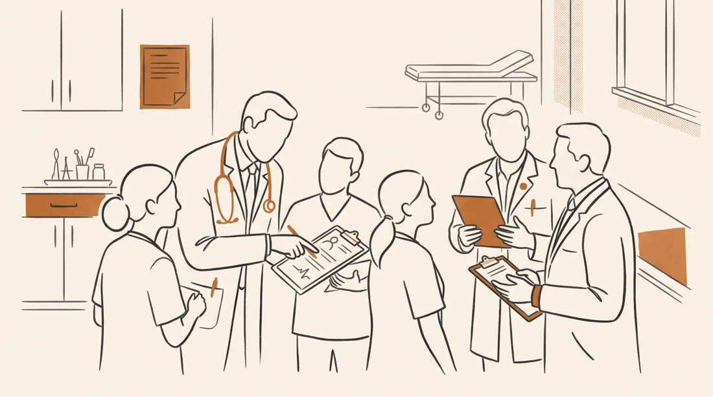

Point-of-care ultrasound
Practical tutorials. See the anatomy, practise the technique.

Find the antrum, interpret the scan and work through five perioperative cases.
Ultrasound-guided access, from probe alignment to threading the cannula.